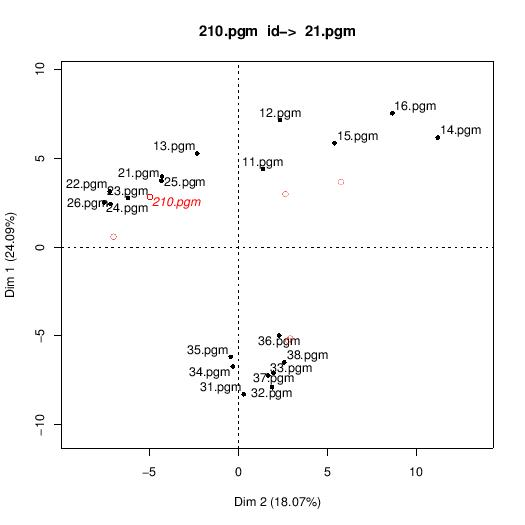
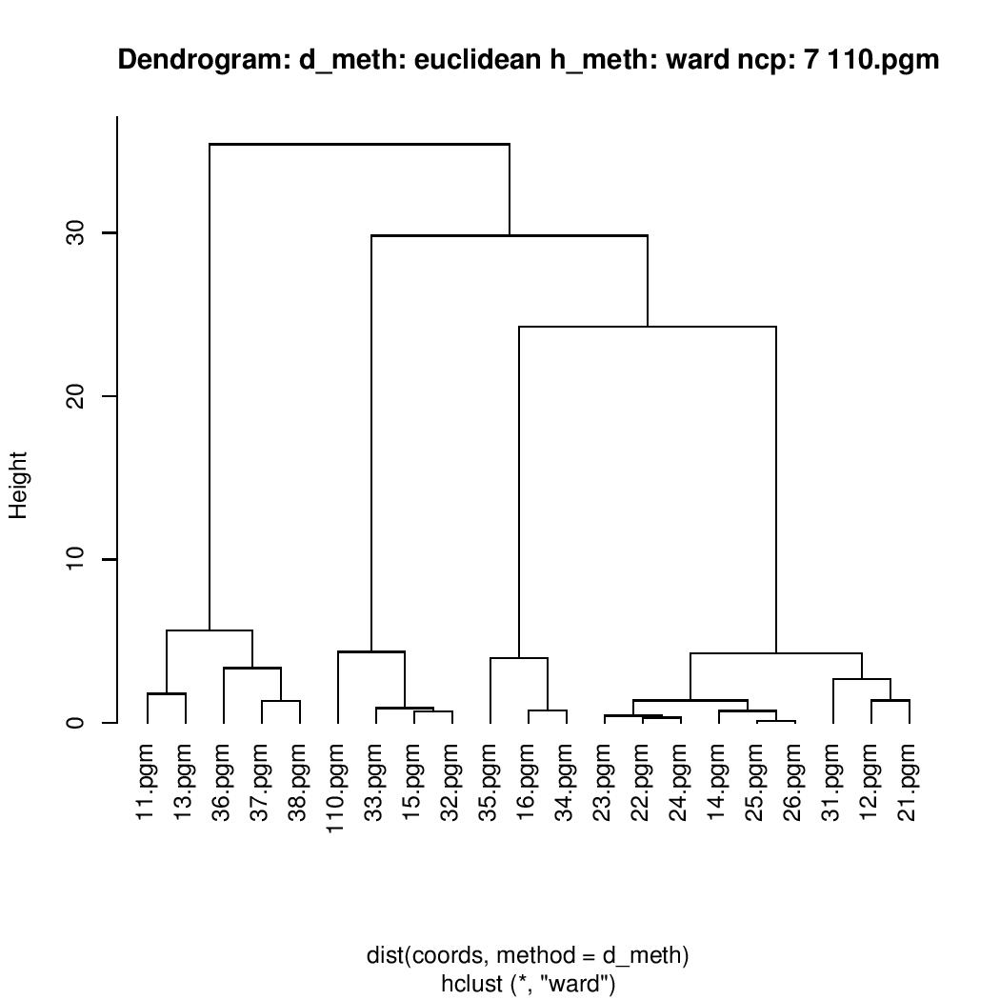

Reconnaissance Faciale
avec R
Créé par Marc DIJOUX / 30005167
Objectif
Nous souahaitons réaliser une reconnaissance faciale via un programme.
Problème 1
Mise en oeuvre de la technique de reconnaissance faciale décrite dans “computerVision.pdf". Techniques: ACP + EUCLIDE
Algorithme
- Préparer les données
- Estimer le nombre d'axes
- Réaliser l'ACP
- Proceder à la reconnaissance
Estimation du nombre d'axes
On cherche a estimer le nombre d'axe à garder pour notre ACP en minimisant l'erreur (déformation) introduite par la réduction de dimension.
Estimation du nombre d'axes
Generalized Cross Validation approximation
> e1 = estim_ncp(in_data, ncp.min = 0, ncp.max = NULL,
+ scale = TRUE, method = "GCV")
$ncp
[1] 7
$criterion
[1] 1.0000000 0.9004591 0.7645654 0.7110463 0.6688959 0.6184872 0.6067041
[8] 0.5991855 0.6057972 0.6272047 0.6490426 0.6926888 0.7492821 0.8351705
[15] 0.9413408 1.0851445 1.2726258 1.8292360 3.4097302
Estimation du nombre d'axes
Smoothing Method
> e2 = estim_ncp(in_data, ncp.min = 0, ncp.max = NULL,
+ scale = TRUE, method = "Smooth")
$ncp
[1] 6
$criterion
[1] 1.0000000 0.8985034 0.7714947 0.7203897 0.7084561 0.6587284
[7] 0.6577382 0.6672878 0.6919864 0.7194343 0.7807044 0.9418529
[13] 1.1860181 1.5839509 2.1282022 5.2259658 28.8421412 83.0410524
[19] 726.6507414
Estimation du nombre d'axes
Probleme 1: Pourcentage Inertie
Estimation du nombre d'axes
> res$eig[,3]
[1] 24.09230 42.16678 52.23322 61.40776 68.51224 73.78959 78.13419
[8] 81.51782 84.29818 86.77607 89.13683 91.19778 92.93348 94.50083
[15] 95.98052 97.30269 98.29278 99.17298 100.00000
Probleme 1: Pourcentage Inertie Cumulée
Réalisation de l'ACP
Implémentation
res = PCA(data, ind.sup=ind_sup, scale.unit=FALSE, ncp=e1$ncp, graph=F)
Procedure de reconnaissance faciale
Algorithme
- Trouver le plan optimal
- Projeter les individu dans le plan
- Calculer les distances entre individus
- Isoler l'individu le moins distant
Détermination du plan optimal
Le Plan optimal est le plan qui représente le mieux un individu.
Autrement dit, c'est le plan qui déforme le moin possible l'individu.
Astuce: cos2
Détermination du plan optimal
> res$ind.sup$cos2
Dim.1 Dim.2 Dim.3 Dim.4 Dim.5 Dim.6
110.pgm 0.052315084 0.04144988 0.001829622 1.742049e-01 0.10210146 3.297792e-03
19.pgm 0.058487489 0.14623189 0.032510711 1.070719e-01 0.05431045 3.817835e-03
210.pgm 0.060494227 0.18700918 0.031763541 2.232197e-03 0.01955733 2.711389e-05
29.pgm 0.001959811 0.29168513 0.016353400 8.370480e-06 0.00599020 1.663334e-02
310.pgm 0.204243590 0.06582713 0.016227922 1.268981e-01 0.05773250 2.801627e-02
39.pgm 0.230484058 0.06544861 0.016271481 5.667482e-02 0.11067633 7.207885e-03
Dim.7
110.pgm 1.850748e-02
19.pgm 1.475802e-06
210.pgm 3.260895e-03
29.pgm 2.135162e-02
310.pgm 1.376552e-02
39.pgm 4.426816e-07
Détermination du plan optimal
Implémentation
a1 = which.max(res$ind.sup$cos2[i,])
a2 = which.max((res$ind.sup$cos2[i,])[-a1])
if(a2>=a1){
a2 = a2+1
}
Résultats



Problème 2
Classification Ascendante Hiérarchique.
Algorithme
- Préparer les données
- Réaliser une ACP
- Réaliser une CAH dans le sous espace principal
- Isoler le premier groupe non singleton dont l'individu fait parti
Réalisation de la CAH
Choix de la metrique
La distance euclidienne à été retenue.
Réalisation de la CAH
Choix de la methode d'aggregation: Ward
-
Avantage:
- Il s'agit d'une optimisation pas-a-pas, qui ne dépend pas d'un choix initial arbitraire
-
Inconvénients:
- Tourne lentement
- Sensible aux valeurs extrêmes
Implémentation
hc = hclust(dist(coords, method = d_meth), h_meth)
m = NULL
for( h in hc$height){
tree = cutree(hc, h = h)
n = 0
m = NULL
for( j in names(tree) ){
if(tree[j] == tree[label]){
m = cbind(m, matrix(data[j,], 91, 91, FALSE))
n = n + 1
}
}
if(n > 1) {
break
}
}
Résultats
